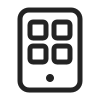

MATCHBOOK LEARNING · MORNING MEETING
MATCHBOOK LEARNING · MORNING MEETINGShow-Me Cards · Tarjetas para mostrar
Cut on the lines. Students hold up a card during Connect · Share so every student answers at the same time, with or without speaking.
 I want to add onQuiero agregar
I want to add onQuiero agregar I see it differentlyLo veo diferente
I see it differentlyLo veo diferente I need more timeNecesito más tiempo
I need more timeNecesito más tiempoKnow Your Lid
Name: _____________________


Students: Label the hand model: alarm brain and thinking brain. List your top three early warning signs.
Estudiantes: Rotula el modelo de la mano: cerebro de alarma y cerebro que piensa. Escribe tus tres primeras señales.
My commitment: One early sign I will watch for this week is…
Una primera señal que vigilaré esta semana es…
Family chat: What helps you get your lid back down?
Charla en familia: ¿Qué te ayuda a recuperar el control?
Point, say, draw, dictate, or write.
My Pause Plan
Name: _____________________

Students: Do two rounds of box breathing with the class. Write your pause plan for school and for your phone.
Estudiantes: Haz dos rondas de respiración cuadrada con la clase. Escribe tu plan de pausa para la escuela y para el teléfono.
My commitment: When I feel the spark, my pause will be…
Cuando sienta la chispa, mi pausa será…
Family chat: What do you do to cool off when you are really heated?
Charla en familia: ¿Qué haces para calmarte cuando estás muy enojado?
Point, say, draw, dictate, or write.
Say It Strong, Say It Right
Name: _____________________

Students: Label three responses: passive, aggressive, assertive. Rewrite an aggressive response as an assertive one.
Estudiantes: Clasifica tres respuestas: pasiva, agresiva, asertiva. Reescribe una respuesta agresiva como asertiva.
My commitment: An assertive line I will use instead of a put-down is…
Una frase asertiva que usaré en vez de un insulto es…
Family chat: How do you stand up for yourself without making it worse?
Charla en familia: ¿Cómo te defiendes sin empeorar las cosas?
Point, say, draw, dictate, or write.
The Strong Move
Name: _____________________


Students: Weigh it: what a fight costs vs. what walking away costs. Write your exit line and your plan if you see a fight.
Estudiantes: Compara: lo que cuesta una pelea y lo que cuesta alejarse. Escribe tu frase de salida y tu plan si ves una pelea.
My commitment: If someone tries to push me into a fight, my exit line is…
Si alguien me presiona para pelear, mi frase de salida es…
Family chat: When is walking away the strongest thing to do?
Charla en familia: ¿Cuándo alejarse es lo más fuerte que se puede hacer?
Point, say, draw, dictate, or write.